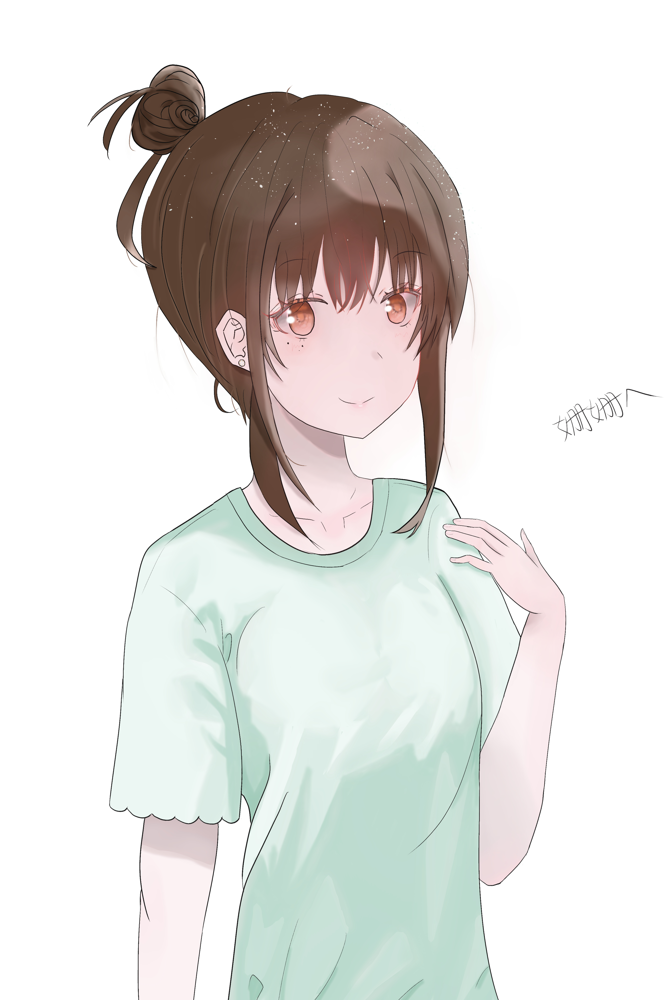

| 我的画作 | 完成时间 | 介绍 |
|---|---|---|
 |
以白色为基调，这是一张白发少女在白色的空间中的图片，她的白色长发随风飘扬着，微红的脸颊似是在诉说着什么一般。 | |
|  | 这是一张画给姗姗老师的画像，扎起的丸子头，浅绿色的短袖，微微抬起的左手，似是在彰显着自己的威严一般，但温柔的神情又是让人感到如此的亲近。 | |
 |
蓝发少女在海中漫步着，伴随着海风吹拂的长发，以及用手掩住不让它们乱飞的动作，这一切都定格在海面翻涌的一刻。 | |
 |
左边是樱花，以及樱花一般的少女，粉色的长裙，粉色的眼睛，伸出她的左手，邀请你一起漫步樱雨。右边是雪花，以及雪花一般的少女，白色的长裙，蓝色的眼睛，微笑地注视着你。 | |
| 以雪为背景，一个绑着双麻花辫的白色长发女生，银蓝色的双眸，浅浅的微笑，微红的脸颊，白色的毛衣，以及飘在肩上的蝴蝶，如此的温柔的少女。 | ||
 |
以樱花为背景，在漫漫蓝天下，一个打着伞的少女，蓝色的长裙，粉色的小皮鞋，粉紫色的双眼，似是在注视着谁，她手中的樱花，飞在伞上的蝴蝶，是如此的迷人。 |